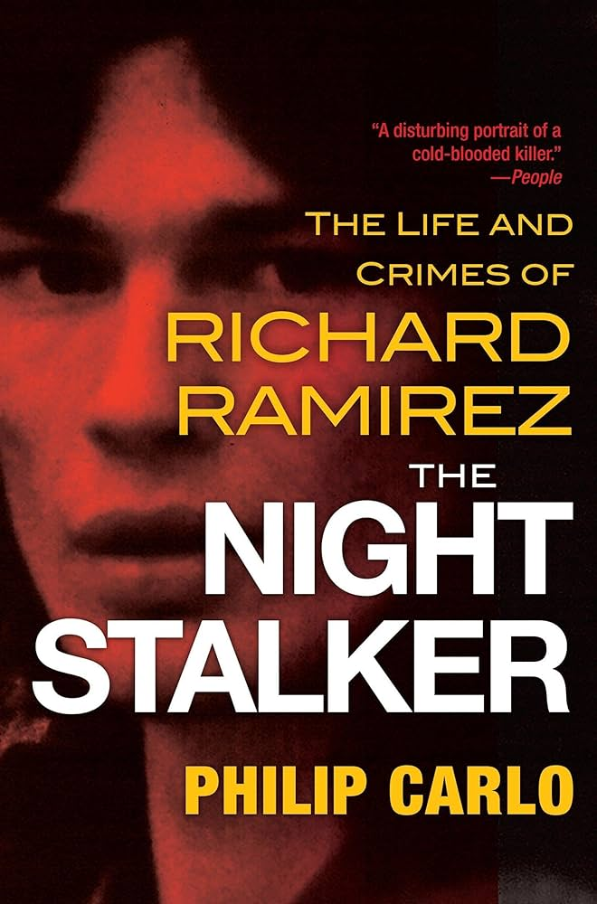

âš ï¸ Viewer discretion advised. Contains disturbing content based on real events.

Richard Ramirez, known as the “Night Stalker,” was one of America’s most terrifying serial killers. Between 1984 and 1985, he unleashed a wave of home invasions, sexual assaults, and murders across California, leaving behind a trail of horror and fear.
🩸 Featured Crime Case: Richard Ramirez — The Night Stalker
📅 Active Years: April 1984 – August 1985
📠Locations: Los Angeles & San Francisco, California
🔪 Confirmed Victims: 15 murdered, dozens assaulted
🧠Modus Operandi: Nighttime break-ins, varied weapons, satanic symbols, random victims
🔥 Key Events
- Ramirez entered homes at night, often through unlocked windows or doors.
- He used guns, knives, hammers, and blunt objects to kill or maim his victims.
- He left pentagrams and other satanic symbols at crime scenes.
- His victims ranged in age from 9 to 83, with no consistent profile.
⚖️ Arrest and Trial
- Captured on August 31, 1985, by citizens who recognized him from a police sketch.
- Convicted of 13 counts of murder, 5 attempted murders, 11 sexual assaults, and 14 burglaries.
- Sentenced to death in 1989; died of lymphoma in 2013 while on death row.
🧠Psychological Profile
Ramirez was heavily influenced by Satanism, violence, and trauma from his early life. His courtroom antics, including shouting “Hail Satan,” cemented his image as a remorseless predator.
📰 Legacy
The case remains one of the most infamous in American criminal history, inspiring documentaries, books, and the Netflix series Night Stalker: The Hunt for a Serial Killer.